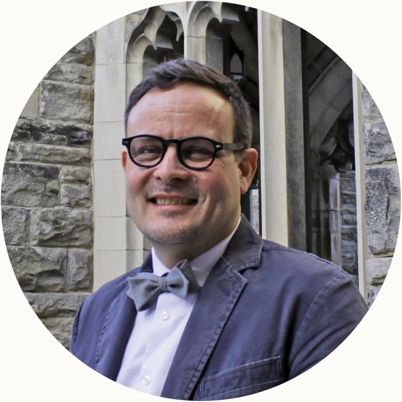

Our Faculty / Gideon Strauss

Gideon Strauss
PhD, MA, BA
- Associate Professor of Leadership and Worldview Studies
Something Worth Considering…
“There is no short-term wisdom.”— Léon Krier
About My Work
I currently articulate my life-long primal research question as follows: What is good for humans, taking into consideration what is good for the whole earth? This question provides the lens through which I ethnographically consider the stories humans tell to account practically for our actions and critically and appreciatively read theoretical studies of such stories by philosophers in the Aristotelian, Thomist, Marxist, and Dooyeweerdian traditions.
Or, to slightly paraphrase my official position description: As Associate Professor of Leadership and Worldview Studies I teach, do research, and serve the wider community in, and at the intersection of, the fields of leadership and worldview studies, with an interdisciplinary approach that attends, specifically, to phenomenological and ethnographic methods of inquiry—and in particular to what I call narrative practice studies. I prioritize equipping students for the praxis (that is, the theoretically informed reflective practice) of leadership as cultural contribution.
Most of my students are participants in the Educational Leadership stream in ICS’s MA program. I mentor students who emphasize school administration in their studies, and I regularly teach the following courses:
- Lead From Where You Are: Making a Difference in the Face of Tough Problems, Big Questions, and Organizational Politics (every summer term)
- The Craft of Reflective Practice (every fall term)
- How to Coach a Strong Team: Leading People, Building Instructional Capacity, and Securing Accountability (every third winter term)
- How to Finance a Vision: Setting Direction and Managing Change within Financial Limitations (every third winter term)
- How to Govern a School: Board Governance, Decision-Making, and Community-Engagement (every third winter term)
My current research interests are focused on the methodology of narrative practice studies, the application of narrative practice studies to the practices of teaching and school administration, the application of narrative practice studies to the study of the relationship between ethics and politics, and the ontological and epistemological conditions for narrative practice studies.
I’d love to talk with you if you want to come and study with us at the Institute for Christian Studies or if you are interested in my research! Email me at gstrauss@icscanada.edu so we can correspond or set up an online video or phone conversation.
For a little more, see my Substack account.
Research Foci
- the methodology of narrative practice studies
- the application of narrative practice studies to the practices of teaching and school administration
- the application of narrative practice studies to the study of the relationship between ethics and politics (with particular attention to the historical circumstances of apartheid South Africa and to the relationship between faith practices and political activism)
- the ontological and epistemological conditions for narrative practice studies (with particular attention to the philosophical traditions associated with Herman Dooyeweerd and Alasdair MacIntyre and to contemporary critical social ontology)
Biography
BA, MA, PhD (University of the Orange Free State, Bloemfontein, South Africa)
Gideon had served three-and-a-half years of a six-year community service sentence as a conscientious objector to military conscription under the apartheid regime in South Africa when conscription was abolished in 1990, at the start of the negotiations for a democratic South Africa. Upon completion of his PhD in 1995 he was appointed as a policy researcher at his alma mater, in which capacity he also worked as an interpreter for the South African Truth and Reconciliation Commission (SA TRC) during 1996 and 1997.
In part to process his experience working for the SA TRC, Gideon studied with Eugene Peterson and Jim Packer at Regent College (Vancouver, Canada) in 1998 and 1999. In 1999 he was recruited to work as the Research and Education Director of the Christian Labour Association of Canada and as the editor of the journal Comment (of the Work Research Foundation, later renamed as Cardus), in which positions he continued until 2009.
From 2009 to 2011 Gideon served as the CEO of the Center for Public Justice (Washington, DC) and from 2012 to 2014 as Associate Professor of Leadership and Executive Director of the Max De Pree Center for Leadership at Fuller Theological Seminary (Pasadena, California).
Gideon started teaching at ICS in 2015.
Publications
Books
- To Honor God (A monograph on executive business leadership), with J. Avedisian, R. Pennings and W. Wright (Max De Pree Center for Leadership with the Work Research Foundation, 2004).
- Does the rainbow cost too much? Polemical essays on the economics of language (University of the Free State Acta Varia, 1997).
- The Economics of Language, eds. G. Strauss, M. Leibbrandt, E. P. Beukes and K. Heugh (Government of South Africa: Department of Arts, Culture, Science and Technology, 1996).
Academic Articles
- “Love is not a four-letter word” in Tydskrif vir Christelike Wetenskap (1998), 51–69.
- “Language, telematics and economic development” in Journal for Community Communication (volume 3, 1997), 1–18.
- “Footprints in the dust: Can neocalvinist theory be credible in postcolonial Africa?” in Acta Academica (volume 28, 1996), 1–35.
- “Language and telematics: Interpretation and translation services, telephony, and the internet” in Language and Business Life (volume 22:2, 1996), 304–321.
- “Writing history in postcolonial Africa” in Journal for Contemporary History (volume 20, 1995), 1–24.
Book Reviews
- Review of Shaping Public Theology: Selections from the Writings of Max L. Stackhouse, eds. Scott R. Paeth, E. Harold Breitenberg Jr. and Hak Joon Lee, in The Review of Faith & International Affairs (volume 13:2, 2015), 85–86.
- “Face to Face with the Wronged”: review of Journey toward Justice: Personal Encounters in the Global South by Nicholas P. Wolterstorff, in Comment (Spring 2014), 58–62.
- “Civil Society and Creation Order”: review of Herman Dooyeweerd: Christian Philosopher of State and Civil Society by Jonathan Chaplin, in Books & Culture (September/October 2013), 22–23.
- Review of Truth is stranger than it used to be: Biblical faith in a Postmodern age by J. Richard Middleton and Brian J. Walsh, in European Journal of Theology (volume 7:1, 1998), 71–74.
Files
- My Curriculum Vitae (CV), March 2024
- My Critical Faith podcast episodes can be found on the ICS website.
- My reflective practice reports:
Teaching
Courses and Syllabi
- My current and recent courses and syllabi can be found here on the ICS Course Catalogue.
Mentoring and Academic Advising
- I mentor ICS Junior Members in the MA-EL stream as they work on their Praxis requirement, and Junior Members in the school administration concentration of that stream as they work on their Project requirement.
- I advise MA students as they work on their theses and can advise PhD students as they work on their dissertations.